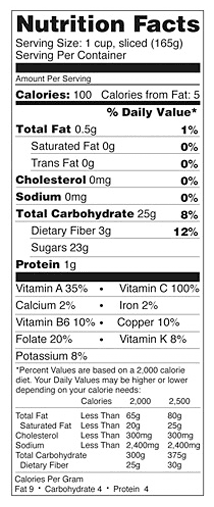

Mango
A mango is a stone fruit produced from numerous species of tropical trees
belonging to the flowering plant genus Mangifera, cultivated mostly for
their edible fruit.
Mangoes are generally sweet, although the taste and texture of the flesh
varies across cultivars; some, such as Alphonso, have a soft, pulpy, juicy
texture similar to an overripe plum, while others, such as Tommy Atkins,
are firmer, like a cantaloupe or avocado, with a fibrous texture.

Nutrition
The energy value per 100 g (3.5 oz) serving of the common mango is 250
kJ (60 kcal), and that of the apple mango is slightly higher (330 kJ (79
kcal) per 100 g). Fresh mango contains a variety of nutrients (right
table), but only vitamin C and folate are in significant amounts of the
Daily Value as 44% and 11%, respectively.
>
Phytochemicals
Numerous phytochemicals are present in mango peel and pulp, such as the
triterpene, lupeol. Mango peel pigments under study include carotenoids,
such as the provitamin A compound, beta-carotene, lutein and
alpha-carotene, and polyphenols, such as quercetin, kaempferol, gallic
acid, caffeic acid, catechins and tannins. Mango contains a unique
xanthonoid called mangiferin.
Phytochemical and nutrient content appears to vary across mango cultivars.
Up to 25 different carotenoids have been isolated from mango pulp, the
densest of which was beta-carotene, which accounts for the yellow-orange
pigmentation of most mango cultivars. Mango leaves also have significant
polyphenol content, including xanthonoids, mangiferin and gallic acid.
The pigment euxanthin, known as Indian yellow, is often thought to be
produced from the urine of cattle fed mango leaves; the practice is
described as having been outlawed in 1908 because of malnutrition of the
cattle and possible urushiol poisoning. This supposed origin of euxanthin
appears to rely on a single, anecdotal source, and Indian legal records do
not outlaw such a practice.